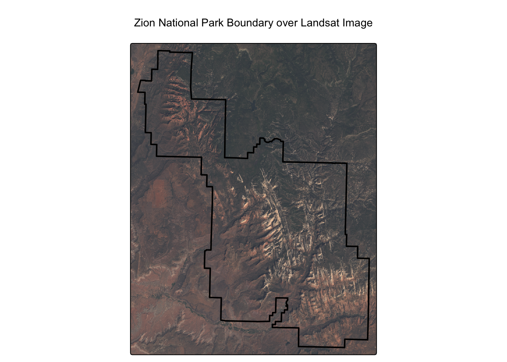
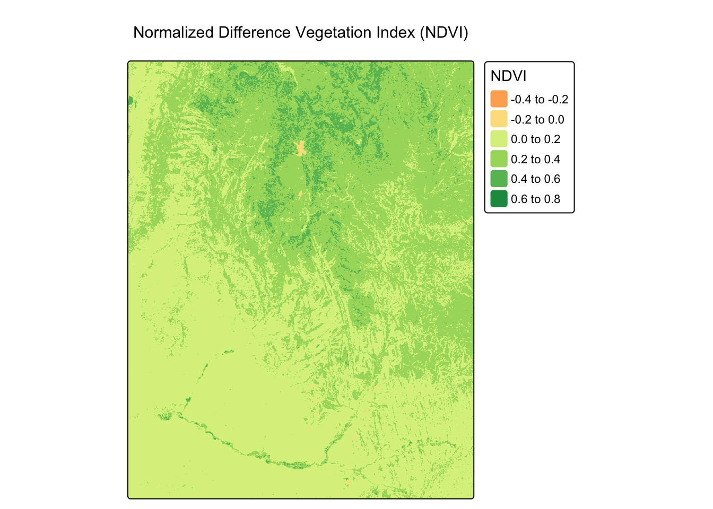
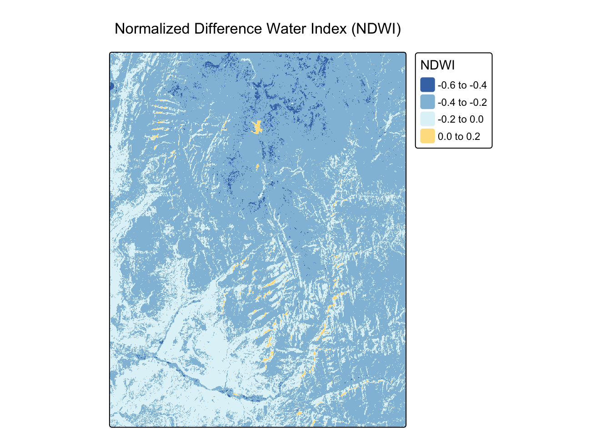
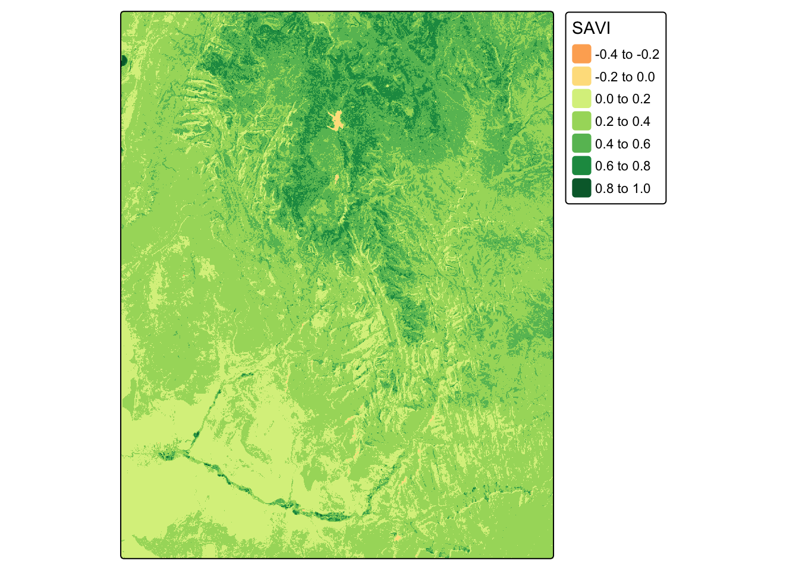
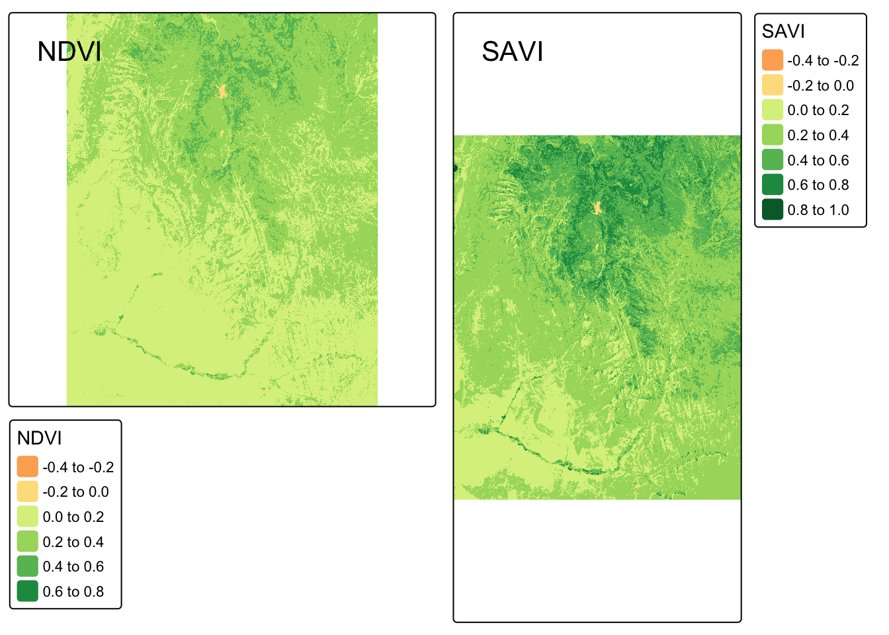

Show/Hide Code
# This command only needs to be run once.
# install.packages("spDataLarge")In the previous modules, we learned how to handle and analyze existing vector and raster datasets. But where does much of our environmental raster data come from? The answer is Remote Sensing (RS)—the science of obtaining information about the Earth’s surface from a distance, typically using satellites.
This module provides a primer on the fundamentals of remote sensing and demonstrates how to process satellite imagery in R to derive key environmental indices used in epidemiology. Understanding the source and nature of your data is critical for interpreting it correctly and being aware of its limitations.
By the end of this notebook, you will be able to: 1. Understand the fundamental principles of remote sensing, including spatial, temporal, and spectral resolution. 2. Identify common satellite systems used for public health applications (e.g., Landsat, Sentinel). 3. Calculate and interpret key environmental indices like the Normalized Difference Vegetation Index (NDVI) and the Normalized Difference Water Index (NDWI) from satellite imagery. 4. Recognize the importance of preprocessing steps and know where to source analysis-ready data. 5. Connect these environmental variables to the ecology of vector-borne diseases like malaria and schistosomiasis.
We will use our standard suite of packages. We will also need the spDataLarge package, which contains a sample Landsat satellite image perfect for our exercises.
If you have not installed spDataLarge before, please do so now. Note: it is a large package.
Now, let’s load our required libraries.
This section is conceptual but essential for understanding the data we’ll be working with.
The quality and characteristics of satellite data are defined by four types of resolution: Spatial, Temporal, Spectral, and Radiometric.
Environmental indices are calculated by combining the reflectance values from different spectral bands. This allows us to enhance specific features, like vegetation or water, that are not obvious in a standard visible-light image.
We will use a sample Landsat image that comes with the spDataLarge package. This is a multi-band SpatRaster.
class : SpatRaster
size : 1428, 1128, 4 (nrow, ncol, nlyr)
resolution : 30, 30 (x, y)
extent : 301905, 335745, 4111245, 4154085 (xmin, xmax, ymin, ymax)
coord. ref. : WGS 84 / UTM zone 12N (EPSG:32612)
source : landsat.tif
names : landsat_1, landsat_2, landsat_3, landsat_4
min values : 7550, 6404, 5678, 5252
max values : 19071, 22051, 25780, 31961 [1] "landsat_1" "landsat_2" "landsat_3" "landsat_4"This sample landsat.tif image is a real satellite excerpt covering the area around Zion National Park in Utah, USA. We can visually confirm this by plotting the park’s boundary over the raster image.
Reading layer `zion' from data source
`/Users/max/Library/Caches/org.R-project.R/R/renv/cache/v5/macos/R-4.4/aarch64-apple-darwin20/spDataLarge/2.1.2/4b90966547c4fd3c5ffecbf6ad608be5/spDataLarge/vector/zion.gpkg'
using driver `GPKG'
Simple feature collection with 1 feature and 11 fields
Geometry type: POLYGON
Dimension: XY
Bounding box: xmin: 302903.1 ymin: 4112244 xmax: 334735.5 ymax: 4153087
Projected CRS: UTM Zone 12, Northern Hemisphere# Create a true-color composite plot with the boundary overlaid
# For a true-color image, we map the Red, Green, and Blue bands to the RGB channels.
# For this dataset: Red = band 3, Green = band 2, Blue = band 1.
tm_shape(landsat) +
tm_rgb(r = 3, g = 2, b = 1, stretch = TRUE) +
tm_shape(zion_boundary) +
tm_borders(col = "black", lwd = 2) +
tm_layout(main.title = "Zion National Park Boundary over Landsat Image",
main.title.position = "center")
As you can see, the raster image aligns perfectly with the park boundary. For this dataset, the standard band order we need for our analysis is: * Layer 2: Green * Layer 3: Red * Layer 4: Near-Infrared (NIR)
We will select these bands using their position number with [[...]].
NDVI is a standardized index of vegetation greenness and health. The formula is: \[NDVI = \frac{(NIR - Red)}{(NIR + Red)}\]
Worked Example: Calculating NDVI
# Assign the Near-Infrared (NIR) and Red bands to variables for clarity
# Based on our data: NIR is the 4th band, Red is the 3rd band.
nir <- landsat[[4]]
red <- landsat[[3]]
# Apply the NDVI formula using raster algebra
landsat_ndvi <- (nir - red) / (nir + red)
# Plot the result using tmap
# The "RdYlGn" palette is a good choice for NDVI, with green indicating healthier vegetation.
tm_shape(landsat_ndvi) +
tm_raster(palette = "RdYlGn", title = "NDVI") +
tm_layout(main.title = "Normalized Difference Vegetation Index (NDVI)")
NDWI is used to delineate open water features. A common formula is: \[NDWI = \frac{(Green - NIR)}{(Green + NIR)}\]
Worked Example: Calculating NDWI
# Assign the Green and NIR bands to variables
# Based on our data: Green is the 2nd band, NIR is the 4th band.
green <- landsat[[2]]
nir <- landsat[[4]]
# Apply the NDWI formula using raster algebra
landsat_ndwi <- (green - nir) / (green + nir)
# Plot the result
# The "-RdYlBu" palette (reversed) is used so high values (water) appear blue.
tm_shape(landsat_ndwi) +
tm_raster(palette = "-RdYlBu", title = "NDWI") +
tm_layout(main.title = "Normalized Difference Water Index (NDWI)")
Now it’s your turn to practice calculating indices from the same landsat object.
The Soil-Adjusted Vegetation Index (SAVI) is a modification of NDVI that attempts to correct for the influence of soil brightness. The formula is: \[SAVI = \frac{(NIR - Red)}{(NIR + Red + L)} \times (1 + L)\] Using the landsat raster, calculate SAVI. Assume the soil brightness correction factor L is 0.5.
# First, ensure the landsat object from the worked example is available
# (This code is repeated to make the solution self-contained)
landsat_path <- system.file("raster/landsat.tif", package = "spDataLarge")
landsat <- rast(landsat_path)
# Assign bands to variables using their position number
nir <- landsat[[4]]
red <- landsat[[3]]
L <- 0.5 # Soil brightness correction factor
# Calculate SAVI using the provided formula
landsat_savi <- ((nir - red) / (nir + red + L)) * (1 + L)
# Plot your result
tm_shape(landsat_savi) + tm_raster(palette="RdYlGn", title="SAVI")
Compare your SAVI map with the NDVI map we created earlier. Use tmap_arrange() to view them side-by-side. Do you notice any subtle differences?
# Re-create all necessary objects to make this chunk self-contained
landsat_path <- system.file("raster/landsat.tif", package = "spDataLarge")
landsat <- rast(landsat_path)
nir <- landsat[[4]]
red <- landsat[[3]]
L <- 0.5
# Re-calculate NDVI
landsat_ndvi <- (nir - red) / (nir + red)
# Re-calculate SAVI
landsat_savi <- ((nir - red) / (nir + red + L)) * (1 + L)
# Create the two separate tmap objects
map_ndvi <- tm_shape(landsat_ndvi) + tm_raster(palette = "RdYlGn", title = "NDVI") + tm_layout(title="NDVI")
map_savi <- tm_shape(landsat_savi) + tm_raster(palette="RdYlGn", title = "SAVI") + tm_layout(title="SAVI")
# Arrange them side-by-side for comparison
tmap_arrange(map_ndvi, map_savi)
The indices we’ve calculated serve as proxies for environmental conditions that favor or inhibit disease transmission.
In this module, you’ve taken a significant step from being a user of spatial data to understanding its origin. You’ve learned the fundamental principles of remote sensing and, most importantly, have gained hands-on experience in turning raw satellite imagery into meaningful environmental variables like NDVI and NDWI.
It is vital to understand that these remote sensing indices serve as proxies for complex ecological processes, not direct measures of vectors or disease. They indicate environmental conditions that are suitable for transmission, but the strength of this association depends heavily on the local context, including the specific vector species, human behavior, and existing control interventions.
A significant challenge in applying these tools is the potential “scale mismatch” between the satellite’s resolution (e.g., a 10m or 30m pixel) and the micro-environments that define vector habitats. This is why a map of environmental suitability is only a hypothesis until it is tested against reality on the ground.